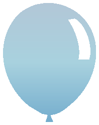

Find the right path
Identify the installed Pair version and load the guidance needed for the task.

PairPair for Codex · Open source
Give Codex focused guidance for Pair PHP. Six skills help it read your installed version, follow existing patterns and carry a change through to verification.
In a Codex CLI with Git marketplace support:
codex plugin marketplace add viames/pair-plugin
codex plugin add pair@viames-pairStart a new chat in your Pair project and invoke @Pair.
Already using Pair from a local marketplace? Disable the old copy after switching. Installation and updates →
Identify the installed Pair version and load the guidance needed for the task.
Use explicit web responses for Pair 4 and preserve existing legacy flows.
Check validation, authorization, ownership, serialization and consumer contracts.
Keep shared controls, server rendering and progressive enhancement coherent.
Review schema changes, backfills, compatibility and rollout boundaries.
Turn generated scaffolding into behavior checked against application requirements.
On-demand references cover authentication, native mobile contracts, ORM, cache, integrations, PWA, push, runtime extensions and upgrades. Pair 4 is the primary reference; installed source guides work on older applications.
The plugin contains instructions and reference material. It runs through your host's model, tools and permissions, with no separate server or API key. It does not change your selected model.
Model-independent guidance is not a guarantee of identical results across GPT models. Structural validation and a 23-scenario evaluation plan are separate; those behavioral evaluations have not been run across all models.
Created by Viames Marino and released under the MIT license. Download the standalone plugin or the full marketplace, with SHA-256 checksums for every release.
This is an independent GitHub distribution, not an OpenAI directory approval. The plugin has no MCP server. Downloading it is free; Codex and model services have their own requirements.